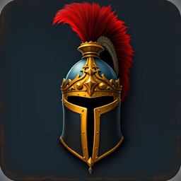

Unhorsed · Knight Jousting Duels
At a glance
These terms are the agreement between you and Ashraf Rach, the developer of Unhorsed, for your use of the game. By installing or playing Unhorsed you accept them. If you do not agree, do not use the game.
We grant you a personal, non-exclusive, non-transferable, revocable licence to install and play Unhorsed on devices you own or control, for your own non-commercial entertainment. The game, its code, art, music and voice lines remain the property of Ashraf Rach or the licensors whose assets it is built from. You may not copy, decompile, reverse-engineer, redistribute or sell the app or any part of it, except where the law gives you the right to despite this restriction.
No account is required to play. You may optionally sign in with Google Play Games or Sign in with Apple to keep your progress across devices (see the Privacy Policy for what that shares). You choose a name for your knight; it is filtered for offensive language before it is kept, but the filter is automated and not perfect — if you see an offensive name, report it to us and we remove it. You are responsible for anything done under your device or linked account.
Gold is earned by playing and spent in the game. Diamonds are earned slowly by playing or bought in packs through Google Play or the App Store. Both are virtual items with no real-world monetary value, cannot be exchanged for cash, cannot be transferred between accounts or players, and are not your property — they are a licence to use a feature of the game, which ends if the game or your access to it ends.
Every purchase is billed, delivered and, where the store allows it, refunded by Google Play or the Apple App Store under their own terms and refund policies, not by us directly. We cannot issue a refund ourselves; contact the store you bought from. If diamonds you paid for do not appear, open Settings → Restore Purchases first, then write to us with your order number.
No gear in Unhorsed is pay-to-win: every piece, including the rarest, can be earned by playing and forged with gold; diamonds only let you get there faster or choose how it looks. Nothing sold in the game can be resold or converted outside it.
Ghost duels replay another player's recorded pass; you are not duelling them live, and no personal message or live chat passes between players. Don't: use a modified or cheating client, exploit a bug for an unfair advantage instead of reporting it, impersonate another player or Ashraf Rach, or choose a knight name that is offensive, hateful or impersonates someone. We may remove a ghost, a name or, for repeated or serious abuse, suspend a save tied to your device or account.
Unhorsed is not directed at children under 13, and depicts stylised medieval combat suited to a general audience, as reflected in its store age rating. If you are under the age your country sets for agreeing to these terms on your own, you need a parent or guardian's permission to play and to make any purchase.
Unhorsed is developed by one person and offered as-is. We try to keep ghost duels, the ranked ladder and purchases online and working, but cannot guarantee uninterrupted service, and some features need an internet connection. We may change, add to or discontinue features, rebalance the game, or — should it ever become necessary — discontinue the game, with notice where we reasonably can. The campaign and your local saves keep working offline even if the online services stop.
The game is provided "as is", without warranty of any kind, express or implied, to the fullest extent the law allows. We are not liable for indirect, incidental or consequential loss arising from your use of the game. Nothing in these terms limits a liability that the law does not allow us to limit, or affects any statutory right you have as a consumer that cannot be waived — including your right to the store's own refund policy.
You may stop playing and uninstall the game at any time; write to us to have your data deleted (see the Privacy Policy). We may suspend or end your access for a serious or repeated breach of section 4. Sections 1, 3, 7 and 9 survive the end of this agreement.
These terms are governed by French law. If you are a consumer resident in the European Union, the United Kingdom or another jurisdiction with its own mandatory consumer-protection law, that law's protections apply alongside this clause, and you may also bring a claim in the courts of your own country of residence where that law allows it.
We will post any change to this page and update the effective date above. Continuing to play after a change takes effect means you accept the new terms; if you do not, stop using the game.